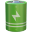

Battery & Charging
—
on-demand
State—
Voltage—
Temperature—
Charger—
Health (age)—
 Gyro & Accelerometer LIVE
Gyro & Accelerometer LIVE
PITCH—
ROLL—
YAW—
Accel (g)—
 HD Rumble Linear Actuator
HD Rumble Linear Actuator
Intensity0%
Frequency—
Operating Mode …
Current mode—
Dock connection—
Video output—
Output resolution—
Applet type—
Wireless Status …
IP address—
Subnet mask—
Gateway—
Primary DNS—
Secondary DNS—
 microSD Card …
microSD Card …
Free—
Total—
Used—
Mount pointsdmc:/